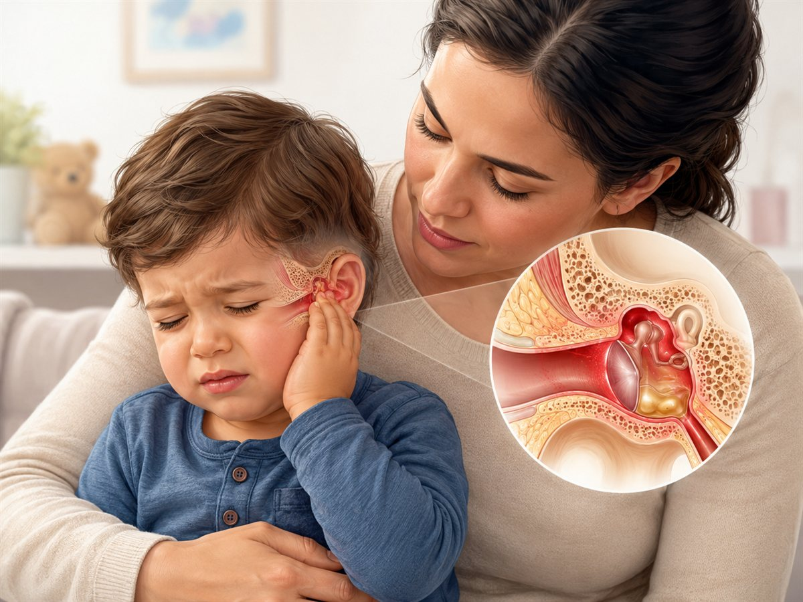

Reassurance for parentsMiddle ear infections are very common in early childhood. Many improve with rest, fluids, and pain relief, but some children need medical review if symptoms are severe or not settling.

Illustrative parent-education artwork. Medical text verified using approved paediatric sources. Final clinician review recommended.
What is Middle Ear Infection (Otitis Media)?
A middle ear infection happens when the space behind the eardrum becomes infected or inflamed, usually after a viral cold. Fluid can build up in the middle ear and cause pain and temporary hearing reduction.
Symptoms & Signs
- Ear pain or pulling at the ear
- Fever and irritability
- Poor sleep or crying
- Temporary hearing difficulty
- Sometimes fluid or pus from the ear if the eardrum bursts
Causes
- Usually due to a virus or bacteria in the middle ear
- Often follows a cold or upper respiratory infection
- Young children are more prone because the eustachian tube is shorter and narrower
Home Management
- Use age-appropriate pain relief as advised.
- Encourage fluids and rest.
- Most children improve over a couple of days.
- Do not put anything into the ear unless a doctor advises it.
- Arrange review if symptoms are not improving.
Red Flags / When to Seek Help
- Very unwell child or hard to wake
- Swelling, redness, or tenderness behind the ear
- Severe pain, persistent fever, or repeated vomiting
- Ongoing ear discharge or worsening symptoms after 48 hours
- Stiff neck, new balance problems, or severe headache
Important Facts / Myth correction
Not every ear infection needs antibiotics.
Pain relief is often the most important early treatment.
Hearing is often temporarily affected while fluid is present.
Legal medical disclaimer
This parent guide is for education only and does not replace a medical consultation, diagnosis, or treatment plan. Advice should be interpreted in the context of your child's age, symptoms, and medical history. If your child has worsening symptoms, breathing difficulty, dehydration, unusual drowsiness, persistent high fever, seizures, or any emergency warning signs, seek urgent medical care immediately. All final guides should be reviewed by a qualified medical professional before clinical use.
References
- Royal Children’s Hospital Melbourne. Kids Health Info: Middle ear infection (otitis media). https://www.rch.org.au/kidsinfo/fact_sheets/ear_infections_and_otitis_media/